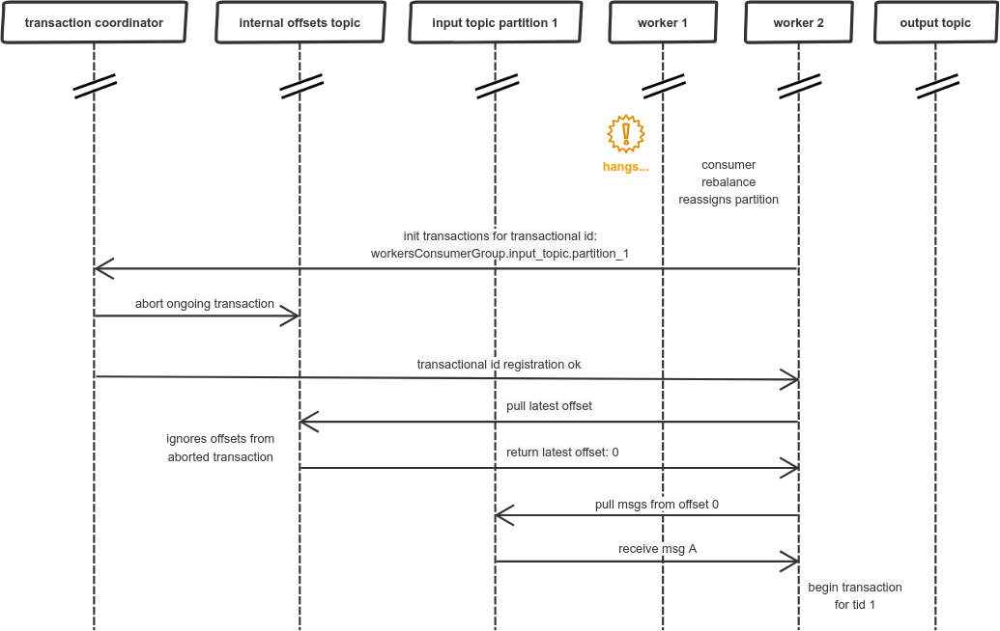

Why should you use separate transactional Kafka producer per consumer group and partition?
1. Intro
This blog post attempts to explain in detail one thing that was at first for me unclear. For example in a Confluent article about Kafka transactions, a short description of the problem can be found:
For instance, in a distributed stream processing application, suppose topic-partition tp0 was originally processed by transactional.id T0. If, at some point later, it could be mapped to another producer with transactional.id T1, there would be no fencing between T0 and T1. So it is possible for messages from tp0 to be reprocessed, violating the exactly once processing guarantee.
Practically, one would either have to store the mapping between input partitions and transactional.ids in an external store, or have some static encoding of it.
Quite similar explanation was given in Spring docs:
2.1.11 Transactional Id When a transaction is started by the listener container, the transactional.id is now the transactionIdPrefix appended with <group.id>.<topic>.<partition>. This is to allow proper fencing of zombies as described here.
So, what I could understand is that I should use separate transactional ids for each partition consumed to enable proper zombie fencing and prevent duplicate messages. Next point will present the scenario where this is necessary.
The assumption is that the reader already knows about Kafka basics (eg partitions, consumer groups) and has read about Kafka transactions on Confluent’s blog. Watching this video is also recommended: Introducing exactly once semantics in Apache Kafka.
2. Failure of transactions caused by invalid usage
Here is the setup in which this fault might occur:
In our scenario, there are 2 workers processing messages from input topic in parallel. Let’s see how incoming message (I’ll name it msg A) could be incorrectly processed and produce duplicated output message (I’ll name it msg B). We start with standard initialization of transactions and pulling the message for the latest offset:
Then, we proceed to processing the message. We start a transaction to send the output message atomically with updating the offset, so first we’re sending the offset:
Just after sending the offset our worker hangs. There could be many reasons, like network issues, but let’s assume it is due to long GC pause. Then the consumer group coordinator reassigns the partition to another worker:
As a result, another worker goes through similar initialization process as previous worker. The problem is that previous transaction is not yet committed, so the offset update sent by worker 1 is ignored. And now, worker 2 is starting its own transaction (let’s asssume for simplicity that it didn’t receive any messages before):
Then, worker 2 sends processing results to the output topic and commits its transaction:
When worker 2 is already done worker 1 wakes up from its long GC pause, unaware of what happened in the meantime. This “nap” seemed like just few milliseconds… so it continues with its own transaction and sends the output message:
After worker 1 commits the transaction there is a duplicated message in the output topic, so our exactly-once guarantee does not hold.
3. Why Kafka transactions didn’t work correctly in this situation?
At the moment when worker 2 is assigned the input partition from worker 1 and initializes transaction, the Kafka transaction for worker 1 should be aborted. The mechanism used for that in Kafka is called zombie fencing, which is described in the Confluent’s article on Kafka transactions, the most interesting part is:
The API requires that the first operation of a transactional producer should be to explicitly register its transactional.id with the Kafka cluster. When it does so, the Kafka broker checks for open transactions with the given transactional.id and completes them. It also increments an epoch associated with the transactional.id. The epoch is an internal piece of metadata stored for every transactional.id.
Once the epoch is bumped, any producers with same transactional.id and an older epoch are considered zombies and are fenced off, ie. future transactional writes from those producers are rejected.
Let’s see on simplified example how zombie fencing works in practice. Overall, this is how it should look like inside the Kafka’s topic:
$ ./bin/kafka-dump-log.sh --files /tmp/kafka-logs/topic-test-0/00000000000000000000.log \
> --print-data-log
Dumping /tmp/kafka-logs/topic-test-0/00000000000000000000.log
Starting offset: 0
offset: 0 ... producerId: 0 producerEpoch: 5 ... payload: thisIsMessageValue1
offset: 1 ... producerId: 0 producerEpoch: 6 ... endTxnMarker: ABORT coordinatorEpoch: 0
offset: 2 ... producerId: 0 producerEpoch: 7 ... payload: thisIsMessageValue2
offset: 3 ... producerId: 0 producerEpoch: 7 ... endTxnMarker: COMMIT coordinatorEpoch: 0When we look closer, we can notice that all the messages were sent with the same producerId and the epoch numbers are incremented. This is the code used to get the above:
Map<String, Object> configs = new HashMap<>();
configs.put(ProducerConfig.BOOTSTRAP_SERVERS_CONFIG, "localhost:9092");
configs.put(ProducerConfig.KEY_SERIALIZER_CLASS_CONFIG, StringSerializer.class);
configs.put(ProducerConfig.VALUE_SERIALIZER_CLASS_CONFIG, StringSerializer.class);
configs.put(ProducerConfig.TRANSACTIONAL_ID_CONFIG, "anyValue");
KafkaProducer<String, String> producer = new KafkaProducer<>(configs);
producer.initTransactions();
producer.beginTransaction();
producer.send(new ProducerRecord<>("topic-test", "thisIsMessageKey", "thisIsMessageValue1")).get();
KafkaProducer<String, String> producer2 = new KafkaProducer<>(configs);
producer2.initTransactions();
producer2.beginTransaction();
producer2.send(new ProducerRecord<>("topic-test", "thisIsMessageKey", "thisIsMessageValue2")).get();
producer2.commitTransaction();In such scenario, second producer tries to initiate transactions for the same transactional id. This results in ABORT marker written directly into the partition, together with data. If, however, we change the transactional id for second producer:
...
configs.put(ProducerConfig.TRANSACTIONAL_ID_CONFIG, "differentValue");
KafkaProducer<String, String> producer2 = new KafkaProducer<>(configs);
producer2.initTransactions();
...Then, we will get the below output:
$ ./bin/kafka-dump-log.sh --files /tmp/kafka-logs/topic-test-0/00000000000000000000.log \
> --print-data-log
Dumping /tmp/kafka-logs/topic-test-0/00000000000000000000.log
Starting offset: 0
offset: 0 ... producerId: 0 producerEpoch: 0 ... payload: thisIsMessageValue1
offset: 1 ... producerId: 1 producerEpoch: 0 ... payload: thisIsMessageValue2
offset: 2 ... producerId: 1 producerEpoch: 0 ... endTxnMarker: COMMIT coordinatorEpoch: 0There is no ABORT marker, so first producer could still commit its transaction. Epoch numbers are not incremented. This situation is similar to our scenario with 2 parallel workers. There was also a transaction in progress, which should be aborted, but wasn’t. Does this mean we should use the same transactional id for both workers? Not quite.
4. Fixing Kafka zombie fencing for parallel processing
To ensure proper functioning of zombie fencing in our original scenario we should make sure that msg A “is processed” by the same transactional id, no matter on which worker this is actually happening. The solution to this problem is already mentioned in the docs and articles:
Practically, one would either have to store the mapping between input partitions and transactional.ids in an external store, or have some static encoding of it.
To avoid handling an external store we will use a static encoding similarly as in spring-kafka:
the transactional.id is now the transactionIdPrefix appended with <group.id>.<topic>.<partition>.
The drawback is that it will require separate transactional producer for each partition, but now we will be able to handle the last failure scenario correctly. Separate transactional producer means that each single worker should have one producer for each partition it is consuming.
So, how this would change the flow of messages in our failing scenario? Firstly, worker 1 will be using transactional id: workersConsumerGroup.input_topic.partition_1, which provides static encoding between input partition and transactional id. The actual fix can be observed at the moment when worker 2 initiates its transactional producer:

What happend above is very similar to our simplified example from point 3: worker 1 and worker 2 used the same transactional id (as there is now a static encoding between partition and transactional id), so the ongoing transaction is aborted. Later on, we can also notice change when worker 1 wakes up:
Which results in receiving this exception within application:
org.apache.kafka.common.errors.ProducerFencedException: Producer attempted an operation with
an old epoch. Either there is a newer producer with the same transactionalId, or the producer's
transaction has been expired by the broker.Zombie fencing works properly now, thanks to using the same transactional id.
5. Summary
Handling transactions between producer sessions has its own nuances. One of our decisions, as Kafka clients, is to pick right transactional ids for producer to enable proper zombie fencing. Hopefully, the example given above makes it clear when should we use separate transactional id for each consumed partition. Only when consumer rebalance can result in assigning partitions to different workers, those separate ids should be used.
Special thanks to Paweł Kubit for proofreading.
Update 21.08.19 - changed title